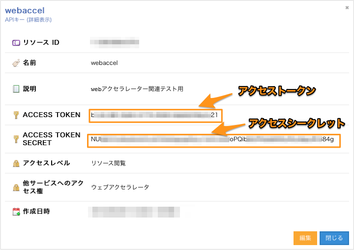

Hanami導入ガイド
目次
インストール
macOS / Linux
curl -fsSL https://releases.usacloud.jp/hanami/repos/install.sh | sh
※bash_completionを有効化するには上記コマンドを実行後に再ログインしてください。
homebrewまたはlinuxbrewを利用している場合は以下でもインストール可能です。
brew tap sacloud/hanami
brew install sacloud/hanami
Windows/その他の場合
以下のリンクからバイナリーファイルをダウンロードして展開し、任意のフォルダー内に配置してください。
(PATHを通しておくと便利です)
bash_completionが利用できる場合は、以下のコマンドでusacloud用のbash_completionを導入することが出来ます。
curl -s -L https://releases.usacloud.jp/hanami/contrib/completion/bash/hanami >> ~/.bashrc
※bash_completionを有効化するには上記コマンドを実行後に再ログインしてください。
Dockerを利用する場合
hanami実行用イメージとしてsacloud/hanamiを公開しています。
# Dockerでのhanami実行例
docker run -it --rm \
-e SAKURACLOUD_ACCESS_TOKEN \
-e SAKURACLOUD_ACCESS_TOKEN_SECRET \
sacloud/hanami -v
whalebrewを利用する場合
Dockerイメージsacloud/hanamiはwhalebrewでのインストール/実行に対応しています。
# インストール
whalebrew install sacloud/hanami
設定
hanamiの実行にはさくらのクラウドのAPIキーの取得/設定が必要です。
APIキーの取得
さくらのクラウドのコントロールパネルからAPIキーを発行します。
コントロールパネルにログインし、「さくらのクラウド(IaaS)」を選択します。

次に以下手順でAPIキーの追加画面を表示します。
- (1) 画面右上の「設定」をクリック
- (2) 左側に表示されるメニューから「APIキー」を選択
- (3) 一覧の右上の「追加」をクリック

APIキーの追加画面が表示されたら、各項目を入力して「追加」をクリックします。
各項目は以下のように入力してください。
- 名前 : 任意の名前を入力
- 説明 : 任意入力
- アクセスレベル :
リソース閲覧を選択 - 他サービスへのアクセス権 : チェックなし

APIキーを作成したら、以下の値を控えておいてください。
- アクセストークン
- アクセスシークレット

以上でAPIキーの取得完了です。
APIキーの設定
APIキーは環境変数、またはコマンド実行時のオプションで指定します。
環境変数で指定する場合
export SAKURACLOUD_ACCESS_TOKEN=<アクセストークン>
export SAKURACLOUD_ACCESS_TOKEN_SECRET=<アクセスシークレット>
コマンド実行時のオプションで指定する場合
hanami --token=<アクセストークン> --secret=<アクセスシークレット>
以上で設定終了です。